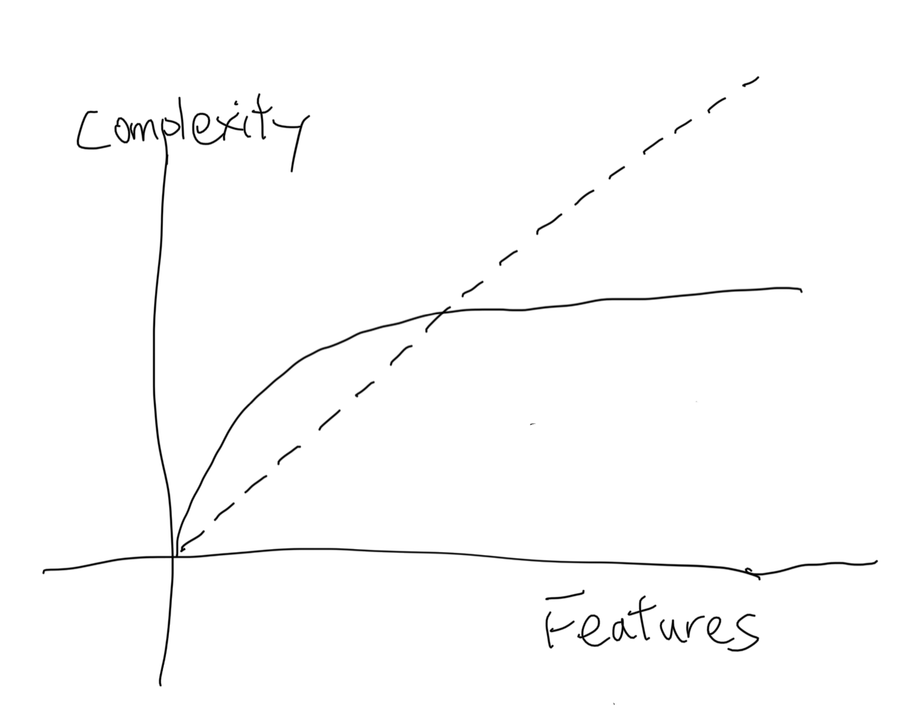
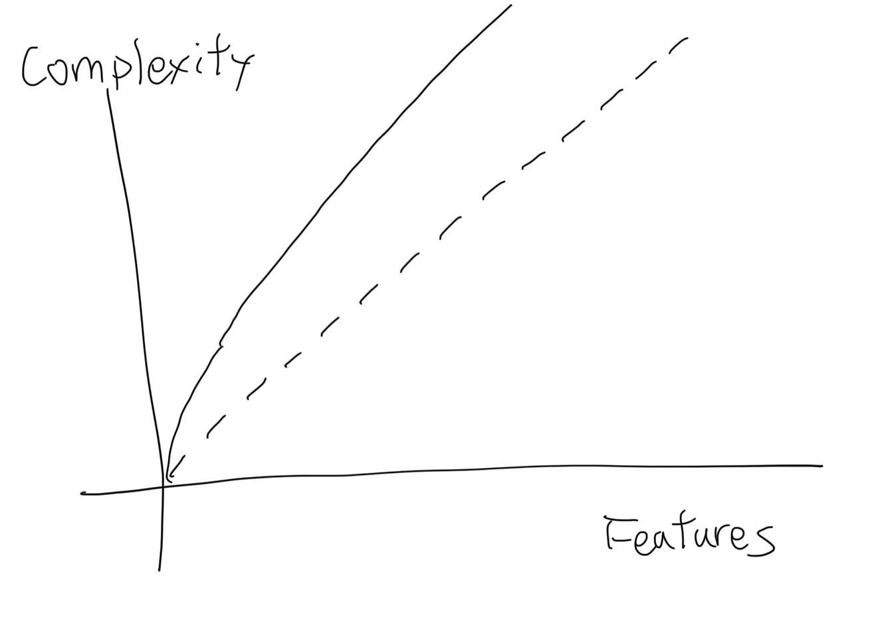

Abstraction and essential complexity
TLDR: Inline abstractions and simplify logic to write better code.
Programmer’s work today is based on different levels of abstractions in the form of APIs and modules, they hide large amounts of implementation details so we can build features and products without understanding every detail. However, abstractions also increase the complexity of our code. Lots of time I struggle with overly complex code and try to fix those pieces by removing unnecessary abstractions. But how can we tell whether the abstraction is good or bad? How much abstraction in the code is too much? This article will be focusing on some of my views about abstraction and complexity in programming.
Power of abstraction
Abstraction is the building block of programmers today, it frees the programmer from massive details of complexity, without it we will still be writing machine code, for example:
- Python and Ruby is an abstraction layer running on C interpreter
- C is a layer on instruction set.
- Rails provide multiple abstraction layers like MVC (model-view-controller), ORM (ActiveRecord, object-relation mapping)
- React hide DOM updates into declarative components and state.
In those examples, the abstractions provide a huge benefit by encapsulating details and providing a high-level syntax or API to let people understand and use them.
Essential and accidental complexity
Although abstraction is a really powerful tool, it also has its limitation.
In the paper “No Silver Bullet“, defines the software complexity in 2 parts. Essential complexity and accidental complexity.
Essential complexity is the complexity inherent in the problem domain. Including the mutation of state, condition, the order of procedure, and messaging. All other complexities from the language, framework, or stack are accidental. The line between those 2 complexities might vary, but basically, you can solve the problem with different languages, and different frameworks, but the essential - the algorithm and logic to solve the problem - can not be reduced. For example, you can write the quicksort in C, python, Haskell, or even pseudo-code. The essential complexity of quicksort still stays the same. Therefore no matter how much the technology of tooling improves, there is still no silver bullet to solve the essential complexity issue to increase the productivity of programmers.
Problem of abstraction
Abstraction is a useful tool to reduce accidental complexity, but it also has several drawbacks:
- It can not reduce essential complexity.
Although abstraction can largely reduce accidental complexity, make the code closer to the problem domain by providing higher-level syntax and API. However, the problem domain still inherits the complexity from the real world. Abstraction can not make it simpler.
- It increases accidental complexity.
This is a tricky part because abstraction is not essential for solving the problem. Any extra abstractions are increasing accidental complexity. But then how does the abstraction decrease complexity? By enough usage of it. A higher-level abstraction can represent multiple lower-level concepts together. So with more usage, it can encapsulate more details and make the code focus on essential complexity but not accidental. So with the growth of the problem domain, the complexity of abstraction will grow like this: .
At the beginning of the graph, it will increase more complexity. For example, we can create the acronym “ECAC” to represent those 2 types of complexity. If I only use this acronym once in this post, it only makes this more complicated because the acronym is not essential. However, if this article got widely accepted, we might be able to call our colleague “you should look at the ECAC for your code” Then it makes the conversation simpler.
- It might be wrong or misleading.
Abstractions are not essential, so in the worst case, they might not be correct and misleading. This graph shows how complexity grows with wrong abstractions. 
If an abstraction does not have enough usage to cover the extra complexity introduced. It only makes the code more complicated. Or the abstraction might not be able to successfully hide lower-level details, and users even have to bypass the abstraction. Both of those cases make the abstraction increase accidental complexity rather than decrease it.
Reduce complexity
Then how can we properly reduce the complexity of our code? Here are a couple of suggestions:
- Make reducing essential complexity the priority
Because, unlike abstractions, a better algorithm is basically, better.
The way I use to estimate is by inline most of the abstractions in our problem domain to see procedures, conditions, messaging, and state mutations. And try to make those steps simpler, like removing redundant steps, changing the order to remove conditions, and removing unnecessary states.
- Always evaluate multiple solutions
Sometimes it is really hard to evaluate whether the changes are worth it or not, Therefore evaluating multiple solutions is a good guideline. We can find what is essential in different solutions, And follow Occam’s Razor principle: the simplest solution usually is the best solution.
- Reorganize, inline, and rename code
With those methods, we can reduce extra abstractions and reduce accidental complexity, and also help you understand the logic and find a better algorithm.
- Rule of three
A basic rule to introduce abstraction is to wait until you have 3 usages. It might vary but that is the least case for the abstraction to be useful.
Example
Here I am going to reuse the example in Sandi Matz’s talk: Polly want a message, In this talk, Sandi explains how object-oriented and abstraction can simplify a project that read a file and print line numbers, here is the source:
1 | class Listing |
And Sandi shows how to use object-oriented to refactor the previous source, I will ignore the progress and only show the result here. It is to better follow the talk for details:
1 | class Listing |
Comparing those 2 versions, I think people have different opinions about them. Some say the object-oriented version is way more complicated than the original one. Others say it provides more flexibility and encapsulates complex logic in objects. But how do we know which way is better? Here comes the essential complexity. When we compare the original code and refactored code. They are essentially doing the same things, with no duplicated code removed from refactoring, but only introducing more abstractions, which increase accidental complexity. So these refactor make the code more complicated in exchange for object-oriented and flexibility, but the goal of refactoring is not to make the code more object-oriented, but to reduce complexity, therefore this refactor is a failure from the complexity standpoint.
But from the standpoint of object-oriented, it is better because it fits all perspectives of object-oriented. Single responsibility, Open-closed, Liskov substitution, Interface segregation, Dependency Injection. But object-oriented is a programming method, not the goal of programming. Refactor to code like this is mistaking the methodology as a goal. And it will seem like a great refactor (done by top OO consultant!) until the next person comes in to try to modify this mud of objects.
So what is the alternative if refactoring into abstractions only makes things more complicated? Leave the code as it is?
The answer is no, we can still improve the original code, but instead of thinking in objects, we have to think in algorithms and logic. We need to find places to reduce essential and accidental complexity. First, we need to find what is the problem in the original code? I think there are a couple of candidates for refactoring:
- Setup git_cmd object is not necessary.
- Naming is confusing in
lines_to_print, it introduced specs, edges, and individual numbers. Those variable names introduce more confusion about what they are doing. - Algorithm for justifying space is bad, it runs
reducewith a large number which can be avoided by calling #min.
So let’s try to solve them one by one
- For the git_cmd, we can easily inline it as a method
- For the lines_to_print, we can rename specs to parsed_line_numbers, edges to range
- For justify spaces, we can use
mininstead of callingreduce - we can move the conditions check into methods to make the workflow looks better
So the refactored version is:
1 | class Listing |
Generally, I think this version is better than the previous two versions. But how do we know which one is better? After all, this refactor doesn’t change code much, it is still doing a lot of things in one object, and doesn’t fit the SOLID principle. but compared to the original code, the essential and accidental complexity both decreased, mainly by improving justifying the logic and some minor improvement for lines_to_print and read_lines. Make the program size from 86 lines to 53 lines. So if we want to introduce abstractions at this point, the code will still be simpler. We can of course introduce more abstractions, but abstractions also increase accidental complexity, read_lines, lines_to_print and justify_spaces can all be extracted to separate modules, but without any usage, those abstractions can not reduce complexity, therefore it is better to wait until there are other usages in the codebase.
Conclusion
When writing code, we need to carefully estimate the essential complexity and accidental complexity, and understand the goal is to reduce them, but not implement any patterns or abstractions themselves. When we see the opportunity to introduce abstractions, start from a simple one and make sure there are enough usages. Also, be ready to remove it when it becomes unnecessary. Last but not least figure out how to reduce essential complexity and replace it with a better algorithm to solve the problem domain.
References
- https://medium.com/ni-tech-talk/caught-in-a-bad-abstraction-55bfe6634b83
- https://en.wikipedia.org/wiki/Essential_complexity
- http://worrydream.com/refs/Brooks-NoSilverBullet.pdf
- https://www.youtube.com/watch?v=IRTfhkiAqPw object oriented programming is embarrassing
- https://www.youtube.com/watch?v=vG8WpLr6y_U&list=PLPxbbTqCLbGHPxZpw4xj_Wwg8-fdNxJRh&index=16 lets program like it’s 1999
- http://blog.spinthemoose.com/2012/12/17/solid-as-an-antipattern/
- https://speakerdeck.com/tastapod/why-every-element-of-solid-is-wrong
Comments